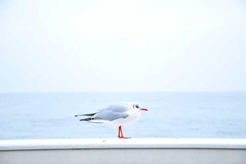

ARTnews Recommends
来源：ARTnews


Rare Marie Antoinette ‘Breast Bowl’ Hammers for $2.47 M. in Paris, Surpassing Top Estimate
来源：ARTnews


CASIO G-SHOCK 携手 HIDDEN.NY 推出限量版 2110HDN-8A
来源：Hypebeast

Alpinestars RSRV 发布全新「DOWNSHIFT」胶囊系列
来源：Hypebeast

SANDRO 发布 2027 春夏 LIGHT WAVE 系列休闲鞋
来源：Hypebeast


Nike Mind 001 推出全新「Palomino」配色，搭载巧克力棕动态节点大底
来源：Hypebeast

Top 200 Collectors
来源：ARTnews

Vans 携手泡泡玛特推出 Vans x DIMOO WORLD 第二波联名系列
来源：HB·POPMART

POP MART 联手 Sony Pictures 正式启动《Labubu》真人电影项目
来源：HB·POPMART

UNIQLO 再度携手 POP MART 扩展「The Monsters」系列
来源：HB·POPMART
走进「Letting Go... Holding On...」Crybaby 特展·上海站
来源：HB·POPMART
走进 THE MONSTERS 十周年全球巡展上海站
来源：HB·POPMART
「Labubu 热」退烧？POP MART 股价应声插水
来源：HB·POPMART
UNIQLO 携手 KAWS 发布全新 UT 系列「KAWS UNIVERSE」
来源：HB·KAWS
Under the Cover
来源：Artforum
Art Institute of Chicago
来源：Artforum
Wallace Chan: Vessels of Other Worlds
来源：Artforum
The Writing on the Walls
来源：Artforum
Ground Rules: Judd’s Adaptive Reuse
来源：Artforum
Chloe Aridjis’s Phone Book
来源：Artforum
My Hongshan Jade Ornaments
来源：Artforum
Artists Ian Cheng, Simon Denny, Jill Magid, and Julia Weist, alongside art historian Patrick R. Crowley
来源：Artforum
Diego Marcon’s Endless Sum
来源：Artforum